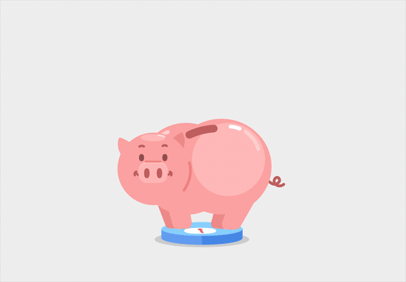

Bienvenidos a nuestro blog personal
Aquí veremos muchos consejos para la vida cotidiana.
Hoy abordaremos cómo administrar mejor y ahorrar nuestro dinero, cuidando siempre tener lo
necesario para vivir.
El primer paso para comenzar a ahorrar dinero es determinar cuánto gasta. Haga un seguimiento de todos sus gastos; eso quiere decir cada taza de café, artículo para el hogar y propina en efectivo. Una vez que tenga la información, organice los números por categorías, como gasolina, compras en supermercados e hipoteca, y obtenga el total de cada una. Use sus estados de cuenta de tarjeta de crédito y bancario para asegurarse de que todo está correcto, y de que no olvidó nada.
El segundo paso Una vez que tenga una idea de cuánto gasta en un mes, puede comenzar a organizar los gastos que registró y establecer un presupuesto con el que pueda vivir. Su presupuesto debería darle una idea de cómo se comparan sus gastos con sus ingresos, de manera que pueda planear sus gastos y limitar gastos excesivos.
El tercer paso es Si sus gastos son tan altos que no puede ahorrar como quisiera, es posible que sea el momento de recortar gastos. Identifique categorías que no sean esenciales en las que pueda gastar menos, como entretenimiento y comer fuera. Busque maneras de ahorrar en sus gastos fijos mensuales como los gastos de televisión y de su teléfono celular, también.

Existe un método llamado "los 5 tarros", que es una excelente
forma de ahorrar el dinero de manera ordenada, si desea saber en detalle sobre este método, dé click sobre la imagen de la derecha.
Estas son algunas ideas para recortar los gastos cotidianos:
-Use recursos tales como los listados de eventos comunitarios para encontrar eventos gratuitos o de bajo costo para reducir los gastos de entretenimiento
-Cancele las suscripciones y membresías que no use, especialmente las que se renuevan automáticamente
-Propóngase a comer fuera solo una vez al mes y vaya a lugares que estén dentro de la categoría de “comidas económicas”
-Dese un “tiempo para reflexionar”: cuando se sienta tentado a hacer una compra no esencial, espere unos días. Se alegrará de no haberla hecho, o estará listo para ahorrar para hacerla.
Una de las mejores formas para ahorrar dinero es establecer una meta. Empiece por pensar para qué podría querer ahorrar, tal vez va a casarse, está planeando unas vacaciones o está ahorrando para la jubilación. Luego decida cuánto dinero necesitará y cuánto tiempo le puede tomar ahorrarlo. Aquí están algunos ejemplos de metas a corto y a largo plazo: Si está ahorrando para la jubilación o para la educación de sus hijos, considere poner ese dinero en una cuenta de inversiones, como una Cuenta Individual de Jubilación (IRA) o un plan 529. Aunque las inversiones vienen con riesgos y pueden perder dinero, también presentan la oportunidad para crecer cuando el mercado crece, y podrían ser convenientes si planea para un evento con mucha anticipación. Vea el paso no. 6 para más detalles. Consejo: establezca una meta pequeña, alcanzable y a corto plazo para algo divertido, y lo suficientemente grande para no tener a la mano el dinero en efectivo para pagar, como un smartphone nuevo o regalos para las fiestas. Alcanzar metas más pequeñas, y disfrutar de la agradable recompensa para la que ha ahorrado, puede darle un impulso psicológico que hace que la sensación gratificante de ahorrar sea más inmediata y que se fortalezca el hábito.
Después de sus gastos e ingresos, es probable que sus metas tengan el mayor impacto en cómo distribuye sus ahorros. Asegúrese de tener en mente las metas a largo plazo; es importante que planificar para la jubilación no quede en un segundo plano después de las necesidades a corto plazo. Consejo: conozca cómo dar prioridad a sus metas de ahorro para tener una idea clara de dónde empezar a ahorrar. Por ejemplo, si usted sabe que va a necesitar reemplazar su auto en un futuro cercano, esta sería una meta para la que puede empezar a ahorrar ahora.
Si está ahorrando para metas a corto plazo, considere usar estas cuentas de depósito aseguradas por FDIC:
Cuenta de ahorros
Certificado de depósito (CD), que congela su dinero por un periodo de tiempo fijo a una tasa que es generalmente más alta que las de cuentas de ahorros
Para metas a largo plazo considere:
Cuentas Individuales de Jubilación (IRA) aseguradas por FDIC, que son cuentas de ahorros fiscalmente eficientes
Valores, tales como acciones o fondos mutuales.
Estos productos de inversión están disponibles a través de cuentas de inversión con un agente corredor de bolsa.
Recuerde que los valores no están asegurados por FDIC, no son depósitos ni ningunas otras obligaciones de un banco y no están garantizados por un banco.
Están sujetos a riesgos de inversión, incluida la posible pérdida de su capital.
Consejo: no tiene que elegir una sola cuenta. Vea cuidadosamente todas sus opciones y considere cosas como saldos mínimos, cargos y tasas de interés, para que
pueda elegir los productos que mejor le ayudarán a ahorrar para sus metas.
| Instrumento | Ahorro o inversión mínimo | Rendimiento Promedio |
|---|---|---|
| Cuentas de ahorro | $500 | Menos de %1 |
| Pagarés bancarios | $5000 | De 1 a 5% dependiendo el monto de inversión |
| Afore:Aportaciones Voluntarias | $100 | 4% |
"Los ricos invierten en el tiempo, los pobres invierten en dinero”. Warren Buffet.